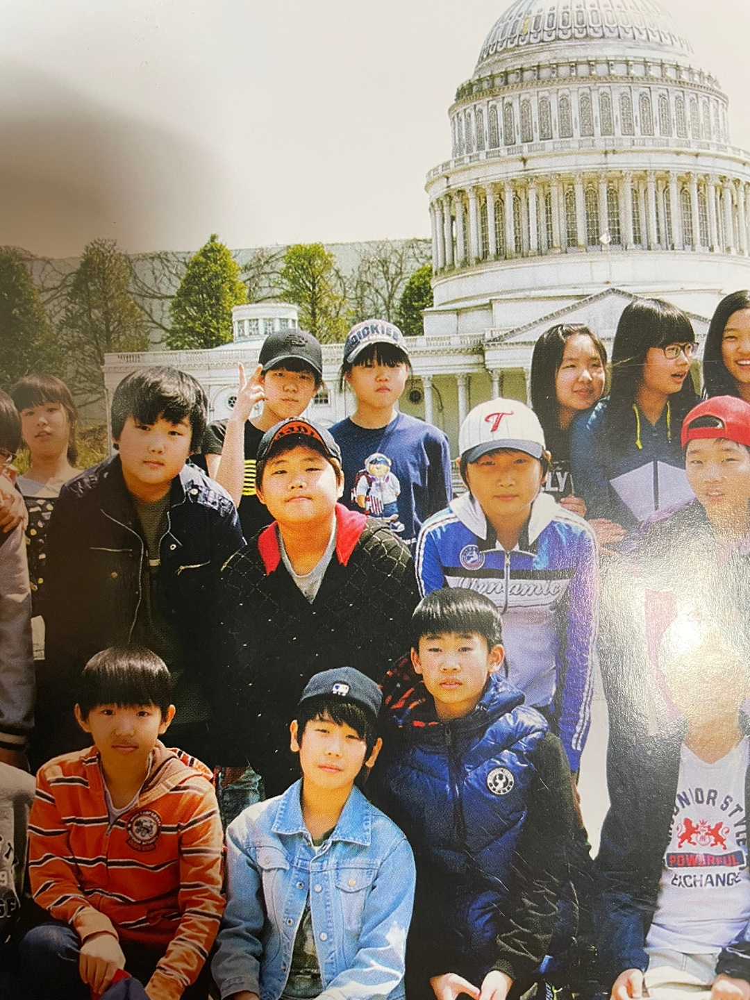

2n년 속 1n년 시절의 배희경
2000-2018

초등학교 : 서울 신석초등학교
초등학교는 고학년 때 추억이 많다. 방송부에 지원해서 합격하면서 방송부 활동도 했고, 본격적인 초딩love가 펼쳐졌던 때..(TMI : 이 때 연애가 내 인생 마지막이다. 젠장) 나는 1년마다 좋아하는 남자애가 바뀌었었는데 이름이 기억나지만 밝히지 않겠다. 추억은 추억으로~
5학년 때 부턴가 일주일에 한 번 전 반이 나와서 피구하는 날이 있었는데 체육을 정말 좋아했던 나는 이날이 너무 좋았다. 가끔 우리가 선생님 말씀을 안들으면 안 나갔는데 나는 진짜 짜증나는 표정을 매번 짓고 있었다ㅋㅋ..
5학년 때 인생 살면서 받을 고백 제일 많이 받았던 때다.(이게 무슨 소용이져 지금 받아야 하는데 쩝;) 사진 보니까 생각 외로 조금 귀여웠던 것 같다. 지금은 전혀 아니다. 5학년 말에 내가 방송부 대표로 뽑혔는데 이후에 방송부 안에서 진짜 난리도 아니게 많이 싸웠다ㅋㅋㅋ 애들이 전학가면서 남은 멤버가 나, 동근, 솔, 세영이었는데 특히 솔이랑 뒷담까면서 겁나 싸웠다ㅋㅋㅋㅋ. 좀 너그러운 리더로 있어볼걸 ㅎ
또, 5학년 때 은평구로 이사를 갔다. 전에 살던 집이 많이 좁았는데 이사가는 집이 넓어서 좋았지만 학교까지 지하철타고 40분? 정도 걸려서 전학을 갈지말지 고민을 많이 했다. 하지만 결국엔 잔류로 결정! 이때부터 책임감이 좀 많았던 걸지도? 이 선택에는 후회는 없지만 아쉬운 점이 딱 하나 있다면, 중학교 갈 때까지 아는 친구가 단 한명도 없었다는 것. 초반에 적응하기 어려웠다ㅜㅜ
6학년이 되고 졸업하면서 그 이후 2년 정도는 스승의 날에 선생님 뵐 겸 친구들 만날 겸 갔지만 이후엔 완전히 단절됬다. 뭐 알아서들 잘 살고 있겠지!?
(초딩시절 TMI - 모자광이었다. 사진보면 알겠지만 거의 모자를 맨날쓰고 다녔다.)
중학교 : 서울 은평 예일여자중학교
내 중학교 3년은 정리할 수 있는 단어는 운동과 성장이다. 1학년 때부터 3학년까지 피구, 티볼로 거의 매일 운동했고 그만큼 운동을 좋아했다! 가장 기억에 남는 친구들이 민이랑 현주! 홍성철 선생님도 기억에 남는다ㅎㅎ
성장은 정말 외면적인 성장을 의미하는데 키와 몸무게가 대박적으로 늘어난 때다. 158cm로 입학해서 170cm 가까이로 졸업했으니 1학년 때 산 옷이 겁나 작아서 낑겨입고 다녔다..ㅋㅋㅋ
1학년 때 가장 기억에 남는 일은 1학기 체육부장을 맡았는데 친구들이 내 생일에 엄청 축하해줘서 정말 기분이 좋았다. 고작 한 명의 생일에 30명 가까이가 한마음으로 축하해주는게 정말 고맙고 기뻤다. 2학기에 회장을 맡으면서 다소 강압적이고 이기적으로 행한 바가 있었던지라 친구들과 관계가 서먹해지기도 했지만, 정작 22살인 지금엔 그 친구들이랑 계속 연락하고 만나며 의지할 수 있는 사람들이 되었다!
2학년 때는 사실 중학교 시절에서 가장 힘들었던 때인데, 처음 학기에 친해졌던 친구들과 잘 맞지 않아서 2학기 내내 거의 떠돌듯이 지냈던 것 같다. 나는 항상 반배정 운이 없어서, 1학년 때 친했던 친구들이 단 한 명도 없다는 것도 그랬지만 그 친구들이랑 같이 있어도 계속 겉도는? 느낌이어서 빨리 3학년이 되고 싶었던 해다.
3학년은 가장 이런저런 일이 많았던 해면서 한편으로는 가장 재밌었고 또 한편으로는 가장 그리운(?) 때이다. 나는 학년마다 꼭 누구 한명이랑 꼭 싸우는 일이 있었는데, 3학년도 역시였다. 다만 3학년 때 싸운 친구랑은 말까지 사이가 계속 안 좋았던 기억이... 3학년 2학기에 친해진 친구가 임서현인데, 집에도 놀러가고 보드도 배우고 하면서 정말 급격하게 친해진 친구다.
내가 중학교 시절을 생각하면서 가장 후회하는 부분이 2가지가 있는데, 먼저 3년동안 했던 운동연습에 있어서 항상 최선을 다하지 않았다는 점이다. 내가 무엇이 부족한지 알고 있었음에도 초반에 실패해서 쪽팔림을 느끼기가 싫다는 이유로 결국 끝까지 제대로 배워보려고조차 하지 않았다. 그걸 비웃을 친구들이 아닌걸 알고 있었는데도 나는 그 순간의 쪽팔림이 싫었나보다. 아니면 내가 뭘 못하는걸 직접 보여주기 싫었던 걸지도?
두번째는 고등학교까지 이어진 안 좋은 부분인데 바로 옆에 있는 사람의 소중함을 몰랐다는 것이다. 나는 지금까지 연락하는 중학교 친구들이 해솔이, 보영이, 지민이 밖에 없는데 물론 3명이라도 있는게 정말 감사한 일임을 알고 있지만 이때는 만나지 못하면 당연히 멀어지는게 아닌가? 라고 생각했고, 친구들에게 너무 내 기분대로 막 대했다는 걸 나중에서야 알게되었다. 또한, 친구관계에 있어서도 나는 최선을 다하지 않았다는 것도
ㅋㅋㅋ뭐 이런저런 역경의 중학교가 지나고 정말 대역경인 고등학교에 진학하게 된다. 근데 내 졸업사진 앞머리 누가 저렇게 했냐...
(중딩시절 TMI - 갑자기 채승주의 숏컷에 끌려 숏컷에 도전하지만 엄마의 아름다운 솜씨덕에 거의 까까머리가 되었고, 그 상태로 태권도장에 가기 쪽팔려서 하루아침에 그만둔다고 선언해버렸다...)

고등학교 : 서울 은평 선정고등학교
고등학교 생활을 정리할 수 있는 말은 열등감이지 않을까 싶다. 되게 이기적이었고, 기분파였고, 항상 불만이 많았던 것 같다. 이게 극에 달한 때가 3학년인데 대학입시라는 그 말이 나한테는 나를 평가하는 기준?이라고 생각했다. 친구들의 시험결과도 대학합격도 진심으로 축하해줄 수 없었고 쟤가 뭔데 나랑 같은데를 써?라는 아주 터무니없는 생각이 가득찼던 때다. 친구들의 성적 정보를 모아서 비교하고 나보다 낮으면 몰래 기뻐하는 그런..ㅋㅋㅋ 전형적인 이기적인 고삼 학생이었다.
물론 한부길 선생님이나 현예리 선생님 같은 좋은 분들도 만날 수 있었고, 지금까지 꾸준히 연락하는 친구들도 만났으며 야자시간에 몰래 나가서 놀고 먹고 했던 재밌는 추억도 있고 간간히 떠오르는 재밌는 일들이 있지만, 그 시절로 다시 돌아가고 싶지는 않다. 예전에는 누군가 나에게 '고등학교 시절로 돌아갈 수 있으면 돌아가?'라고 물었을 때 공부를 안한게 너무 후회되서 다시 돌아가면 1학년 때부터 내신을 챙길거라고 이야기 했었는데 지금은 돌아가고 싶지 않다. 왜냐면 돌아가서 내가 내신을 챙긴다고 하더라도 나는 똑같이 열등감과 질투심 등에 쌓여 똑같은 행동을 반복했을 테니까. 그러니까 결론은 굳이 과거에 집착하지 말자 생각하게 되었다는 것이다. 그렇게 이기적이었던 과거의 나도 결국엔 내가 책임져야하는 나였고, 그런일들을 통해 앞으로는 그러지 말아야겠다고 배운 점들이 많으니까.
그래도 내 고등학교 생활 전부가 후회되는 건 아니다. 얼마전에 방정리하다가 우연히 생활기록부를 봤는데, 그래도 나 나름 열심히 했다는 생각이 들었다. 눈에 띠게 특출난 부분이 있는 것은 아니었지만 다양한 부분을 시도하면서 치열하게 보낸 흔적들이 보였기 때문이다. 가장 돌아가고 싶지 않은 시절이지만, 내가 가장 열심히 살았던 시절이기도 하니까. 그냥 나중에 누군가 나에게 고등학교 생활이 어땠냐고 물어보면 지금처럼 후회와 자책을 이야기하는 게 아니라 '나? 내가 가장 열심히 살았던 시절들 중 하나야'라고 가볍게 답할 수 있기를 바란다.
(고딩시절 TMI - 몸무게가 인생 최고를 찍었다. 별로 친하지 않았던 백소연과 3박 4일 일본여행을 갔다..!)
이렇게 초,중,고 학창시절에 대한 간략한 소개를 마무리 하며 다음챕터는 바로 20대의 나!